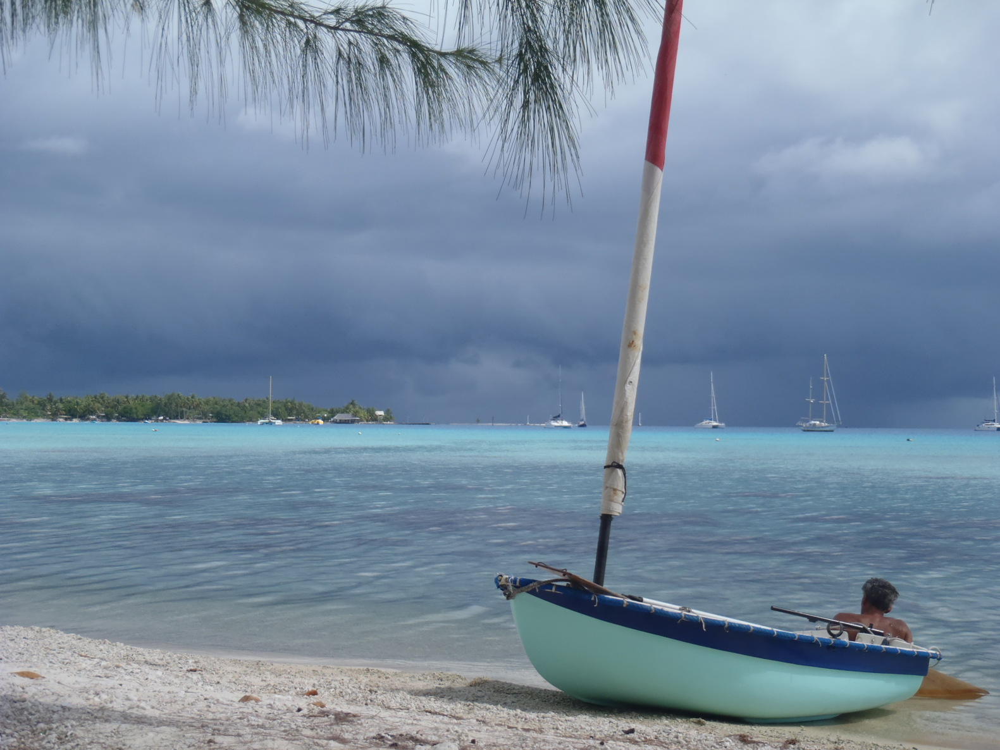
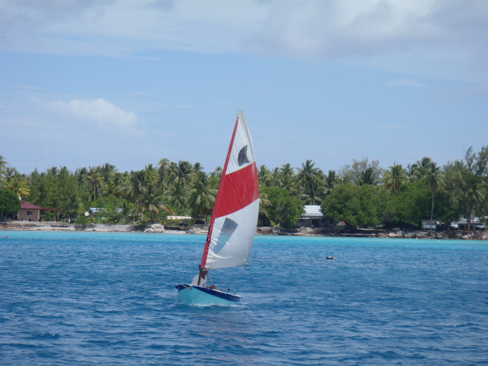
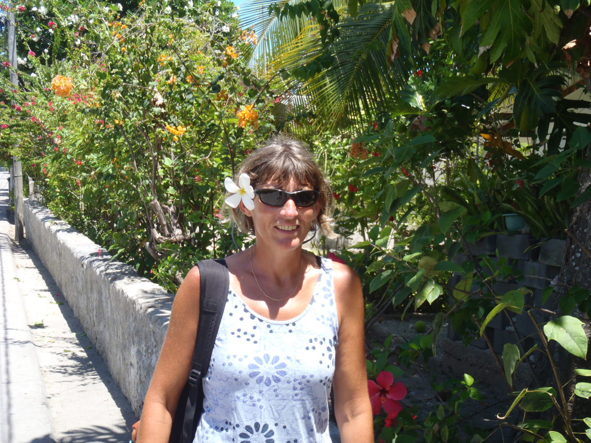
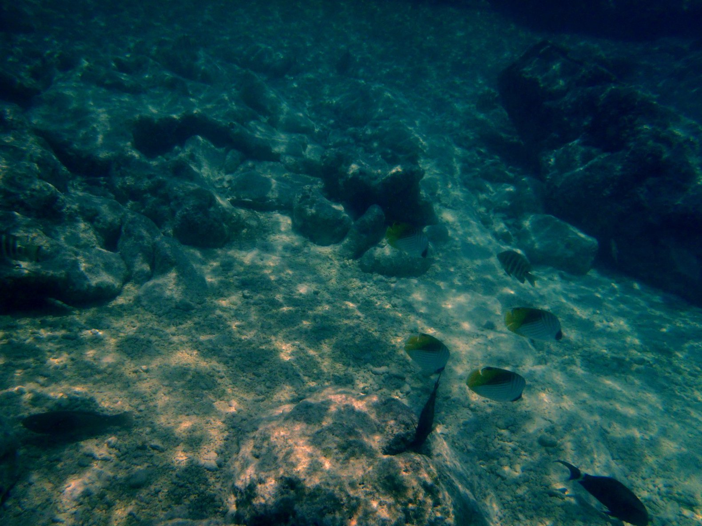

Tuamotu, Rangiroa |
|

The first thing that really strikes us is the light, and the colors... It's quite different from what we've seen
in the Marquesas, the palette of colors seems wider for the blue.
Then the water is crystal clear. It was clean in the Marquesas, but here it is also transparent. We can see the bottom even if it is 15 meters deep. And fish! Fish all over the place, all kinds of shapes, all kinds of colors. Notice on the picture that the dinghy colors match the landscape! We went ashore to check out the Tiputa Pass, through which we came in. It was flooding when we arrived, it is now ebbing. The first thing that comes to mind is something like "How the fuck did we manage to get in there...". With the wind against the tide, it's quite tough, to say the least. Big dolphins are playing is those big waves, they're jumping ten feet above the waves..., they really seem to have a lot of fun in those scary waves. |
|

The place is small, but we rented bikes to go to Avatoru, where I want to check out the Avatoru Pass. The good thing
is that there is only one road, there is no way to miss the destination!
We can also find supplies along the way (mostly beer). Corine bought a couple of pearls. Diving - like every day - to check the anchorage, I noticed that it was stuck under a coral potato. Fifteen meters, it's a bit deep for me to dive down there... We managed to fix it, using the windlass, and the engine, good. So we re-anchored with a tripping line at the bottom of the anchor, with a fender as a float at the other end. So, if it is stuck again, we'll be able to pull the anchor back on deck. We also checked out some little snacks and restaurants. Those guys do know how to prepare fish! The Tahitian recipe is my favorite, with coconut milk. Corine apparently prefers the carpaccio. There is one place like that we went to, directly from the ketch, with the sail rigged on the dinghy. That is for sure a nice way to get to lunch. The owner of the restaurant told Corine he was planning to build some kind of dock, for more people to be able to reach his place this way. The beach at the mouth of an hoa was good enough for us. Most of those restaurants are in such a place that you have to be very dedicated to pay attention to what's in your plate..., the terrace is the coral beach, with the lagoon stretching from left to right, as far as you can see. |
|


We also took the "ferry" to check out the village of Tiputa, on the other side of the pass. There are two crews on the boat. The driver, and another guy,
taking care of the dock lines. This one is tatooed!.., even on the eye lids.
Rangiroa is a small place, but it's big enough for us to do something different every day. I remember that originally, I did not want to stop in Rangiroa, because I had read that this was the most civilized atoll in the Tuamotu. Well, that would have been too bad to miss it, it's not exactly St Tropez! It still feels quite remote, to say the least... Having a flexible and adaptable planning when sailing sometime reserves you some nice surprises. That was one. In fact, on our last day on the atoll, a big cruising ship, the "Royal Princess", some container ship for tourists anchored in the lagoon. The life ashore became a bit different, the ship was dumping barges of tourists on the small pier, and they were rushing for pop-corns, hamburgers, snacks, ice-creams..., speaking english and loud. The good thing is that they were easy to spot. The people of the atoll had setup some small booths to sell souvenirs, pareos, and kind of tourist things like that. We can also be considered as tourists, but not the same kind. This gives a very different look to the atoll. Fortunately for us, this is not the way we saw the place the first time. |